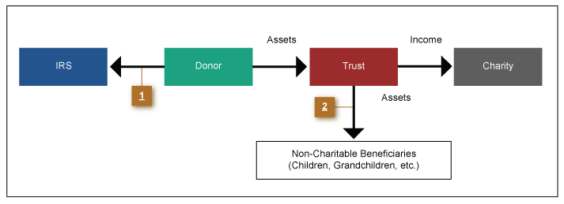

The Charitable Lead Trust (CLT) operates somewhat like a Charitable Remainder Trust, only in reverse. With a Charitable Lead Trust, the charity enjoys the income from the property for a period of time, and the trust distributes the property to the beneficiary(ies) when the trust terminates.
The following features are found in the trust document of a charitable lead trust:

The Charitable Lead Trust is an excellent way to support charities while making discounted, deferred transfers to heirs. For example, with federal tax table rates at 5.4%, a 10-year CLAT, paying 7% annually (as valued when the trust was funded) to a charity, offers a 54% discount from market value on the assets that will go to the remainder beneficiaries. If the trust lasts for 15 years, the discount increases to 72%. Increase the trust to 20 years, and the discount rises to 86%. These discounts can result in substantial estate and gift tax savings for high net worth clients whose estate values are significantly above the amount that can be covered by their Applicable Credit/Exclusion Amount and where leverage is needed to maximize reductions in the size of their taxable estates with minimum use of their Applicable Credit Amount on lifetime transfers.